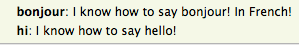
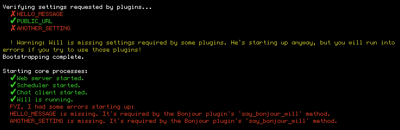

Plugin Builtins
Will's WillPlugin class packs in lots of useful functionality to make writing powerful plugins simple. Let's go through it.
Storage
Will can remember almost any python object (using dill), even across reboots.
It's as simple as:
self.save("my_key", "my_value")
self.load("my_key", "default value")
self.append("my_key", "value")
self.pop("my_key", "value")
You can also save a value temporarily by setting the number of seconds before it expires:
self.save("my_key", "my_value", expire=10)
Template rendering
Will includes Jinja for powerful awesome template rendering. To use it, just call self.rendered_template()
self.rendered_template(template_name, context={})
template_name: path to the template, relative to theTEMPLATE_DIRSspecified inconfig.py.context: a dictionary to render the template with.
You can use rendered_template() directly in a plugin,
@respond_to("what are the rooms\?")
def list_rooms(self, message):
"""what are the rooms?: List all the rooms I know about."""
context = {"rooms": self.available_rooms.values(),}
self.say(rendered_template("rooms.html", context), message=message, html=True)
Or, you can stack it as a decorator.
@route("/")
@rendered_template("home.html")
def homepage_listener(self):
return {}
A note on TEMPLATE_DIRS - Will automatically includes the following:
- Core Will's
templatesdirectory, - Your Will's
templatesdirectory, - All
templatesdirectories in the root of modules specified insettings.PLUGINS.
Help and documentation
Just include a docstring, and your command will be included in @will help:
class BonjourPlugin(WillPlugin):
@respond_to("bonjour")
def say_bonjour_will(self, message):
"""bonjour: I know how to say bonjour! In French!"""
self.reply(message, "bonjour!")

If you've organized your plugins in a module, your plugin's help text will be grouped by module.

Access Control
You can restrict certain actions to particular groups, by using will's access control list (ACL) support.
Usage
To use ACL, you simply specify ACL groups and the relevant handles in your config.py, then pass acl=[] into any relevant @respond_tos or @hears.
Here's an example with an ops team, and an admin team:
# config.py
ACL = {
"ops": ["steven", "levi", "susan"],
"admins": ["wooh"],
}
Then, in your listeners:
# Allow the ops and admins groups to stop EC2 instances,
# but only allow admins to terminate the instances.
@respond_to("ec2 instance stop (?P<instance_id>.*)", acl=["ops", "admins"])
def stop_ec2_instance(self, message, instance_id):
# do AWS stuff
@respond_to("ec2 instance terminate (?P<instance_id>.*)", acl=["admins"])
def terminate_ec2_instance(self, message, instance_id):
# do AWS stuff
Complex ACL behaviors, simple as that.
Access settings and config
Will takes care of passing in environment variables and config via the settings module. To use it:
config.py:
HELLO_MESSAGE = "Bonjour from config.py"
or, on the shell:
# note the `WILL_` prefix
export WILL_HELLO_MESSSAGE="Bonjour from the environment"
then, in any plugin:
from will import settings
class BonjourPlugin(WillPlugin):
@respond_to("bonjour")
def say_bonjour_will(self, message):
self.reply(message, settings.HELLO_MESSAGE)
You can also mark one or more settings as required for your plugin with the require_settings decorator, and they'll be checked on startup.
from will import settings
class BonjourPlugin(WillPlugin):
@require_settings("HELLO_MESSAGE", "ANOTHER_SETTING")
@respond_to("bonjour")
def say_bonjour_will(self, message):
self.reply(message, settings.HELLO_MESSAGE)
When will starts up, he'll make sure they've been set:

Getting a room's history
Sometimes you'll want to retrieve a room's history. No problem - get the room's object, and the last 75 messages are sitting on .history.
class HistoryPlugin(WillPlugin):
@respond_to("^get last message")
def get_history(self, message):
room = self.get_room_from_message(message)
self.reply(message, room.history[-1]["message"])
.history is pretty much what's returned from the HipChat room history API - the lone exception is that the date has been converted to a python datetime.
{
u'from':{
u'mention_name':u'First Last',
u'id':xxxx,
u'links':{
u'self': u'https://api.hipchat.com/v2/user/xxxx'
},
u'name':u'First Last'
},
u'date':datetime.datetime(2015, 1, 26, 15, 26, 52),
u'mentions':[
{
u'mention_name':u'FirstLast',
u'id':xyxy,
u'links':{
u'self': u'https://api.hipchat.com/v2/user/xyxy'
},
u'name':u'First Last'
}
],
u'message':u'Hi there!',
u'type':u'message',
u'id':u'xxxxxxxx-xxxx-xxxx-xxxx-xxxxxxxxxxxx'
}
Parse natural time
Often, it's useful to be able to talk to will about time in natural language. To make that easy, will includes the helper functions built on parsedatetime and natural: self.parse_natural_time and self.to_natural_day_and_time.
parse_natural_time
self.parse_natural_time(time_string) parses a textual time string, and returns a datetime object.
@respond_to("remind me on (?P<remind_time>.*)")
def remind_me_at(self, message, remind_time=None):
parsed_time = self.parse_natural_time(remind_time)

to_natural_day_and_time
self.to_natural_day_and_time(my_datetime) converts a python datetime into a human-friendly string.
@respond_to("show_reminders")
def remind_me_at(self, message, remind_time=None):
reminders = self.load("reminders")
for r in reminders:
natural_time = self.to_natural_day_and_time(r)
self.say("On %s" % natural_time)
Now you've got the hang of how to write your own plugins - but before you reinvent the wheel, take a look at what plugins are included in will!